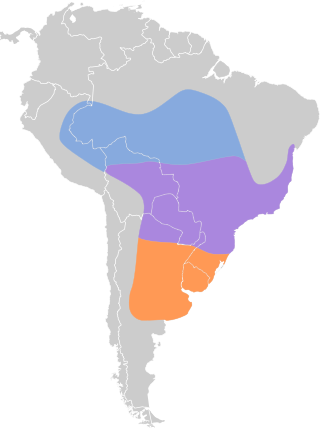

Coleirinho
.jpg)
Nome científico:(Sporophila caerulescens Linnaeus, 1758)
Nome comum: Coleirinho
Classificação biológica:
Domínio: Eukaryota.
Reino: Animalia.
Filo: Chordata.
Classe: Aves.
Ordem: Suliformes.
Família: Thraupidae.
Gênero: Sporophila.
Espécie: Sporophila caerulescens.
Nutrição: Granívoro.
Hábitos alimentares:Alimenta-se principalmente de sementes de gramíneas e outras plantas herbáceas. Também consome insetos, especialmente durante o período de reprodução, para atender às necessidades nutricionais dos filhotes.
Morfologia do corpo:Mede cerca de 11 a 13 cm de comprimento e pesa entre 12 a 15 gramas. Possui bico curto e forte, característico dos pássaros granívoros, adaptado para quebrar sementes.
Comportamento:O coleirinho (Sporophila caerulescens) é uma ave ativa e social, frequentemente vista em grupos ou pares. Os machos são territoriais e usam seu canto para marcar território e atrair parceiros. Alimentam-se principalmente de sementes e preferem áreas abertas.
Principais Presas:Pequenos insetos, como formigas e cupins, complementam sua dieta à base de sementes, especialmente quando estão alimentando os filhotes.
Principais Predadores:Aves de rapina, como gaviões e falcões, além de pequenos mamíferos carnívoros e serpentes. Esses predadores podem atacar tanto os ovos quanto os filhotes nos ninhos.
Locais habitados
Distribuição: Nos Biomas de Mata Atlântica, Cerrado, Pantanal
Habitat:O coleirinho prefere áreas abertas como campos, pastagens e bordas de florestas. Ele também se adapta a ambientes urbanos, sendo encontrado em parques, jardins e áreas agrícolas. Sua dieta principal é composta por sementes.
Reprodução:O coleirinho constrói pequenos ninhos em formato de taça em arbustos ou árvores baixas. A fêmea põe de 2 a 3 ovos, que são incubados por cerca de 12 a 14 dias. Os filhotes deixam o ninho aproximadamente 15 dias após a eclosão. Ambos os pais participam dos cuidados com os filhotes.